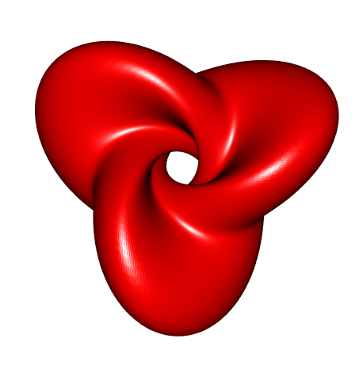
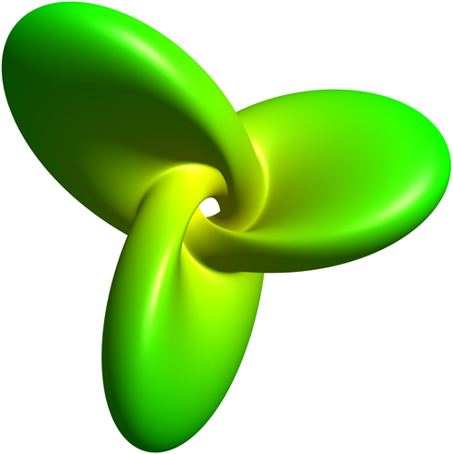

Parametric Hopf torus
Identify \(S^3\) with the unit quaternions and \(S^2\) with the unit quaternions with a null \(i\)-part component. Then the Hopf map is expressed as \[ \begin{cases} \Pi \colon & S^3 \to S^2 \\ & q \mapsto \tilde{q} q \end{cases} \] where the quaternion \(\tilde{q}\) is obtained from \(q\) by negating its \(i\)-th component.
library(onion)
Pi <- function(q){
qtilde <- q
i(qtilde) <- -i(q)
qtilde*q
}
Pi(quaternion(Re=1, i=2, j=3, k=4))
## [1]
## Re -20
## i 0
## j 22
## k -4Choose a curve \(p \colon [a,b] \to S^2\) and a lift of \(p\), that is a map \(y \colon [a,b] \to S^3\) such that \(p = \Pi \circ y\).
For our illustration, we will take the closed curve \(p \colon [0,2\pi] \to S^2\) defined by \[ \begin{cases} p_1 \colon t \mapsto \sin\bigl(h\cos(nt)\bigr) \\ p_2 \colon t \mapsto \cos(t)\cos\bigl(h\cos(nt)\bigr) \\ p_3 \colon t \mapsto \sin(t)\cos\bigl(h\cos(nt)\bigr) \end{cases} \] where \(n\) is an integer.
The lift is easy to get: simply take \[ y(t) = \frac{\bigl(1+p_1(t),0,p_2(t),p_3(t)\bigr)}{\sqrt{2\bigl(1+p_1(t)\bigr)}}. \]
Let’s check:
y <- function(t){
c(1+p(t)[1], 0, p(t)[2], p(t)[3]) / sqrt(2*(1+p(t)[1]))
}
Pi(as.quaternion(y(1), single=TRUE))
## [1]
## Re -0.3857282
## i 0.0000000
## j 0.4984896
## k 0.7763516
p(1)
## [1] -0.3857282 0.4984896 0.7763516Ok.
The Hopf cylinder of \(p\) is then \((t,\phi) \mapsto e^{i\phi}y(t)\), and we say it’s a Hopf torus when the curve \(p\) is closed. This is a parametric representation of a Hopf torus.
Here, the integer \(n\) determines the number of lobes of the Hopf torus, and
the parameter \(h\) controls the shape.
Now, apply the function \((t,\phi) \mapsto e^{i\phi}y(t)\) and then apply the
stereographic projection.
Below is a R code after we got rid of the quaternions.
h = 0.4
n= 3 # number of lobes
F <- function(t,phi){
p2 <- cos(t) * cos(h * cos(n*t))
p3 <- sin(t) * cos(h * cos(n*t))
p1 <- sin(h * cos(n*t))
## alternatively,
# den = sqrt(1+h^2*cos(n*t)^2);
# p2 = cos(t)/den;
# p3 = sin(t)/den;
# p1 = h*cos(n*t)/den;
##
yden <- sqrt(2*(1+p1))
y1 <- (1+p1)/yden
y2 <- p2/yden
y3 <- p3/yden
cosphi <- cos(phi)
sinphi <- sin(phi)
x1 <- cosphi*y1
x2 <- sinphi*y1
x3 <- cosphi*y2 - sinphi*y3
x4 <- cosphi*y3 + sinphi*y2
return(c(x1/(1-x4), x2/(1-x4), x3/(1-x4)))
}Now we can use the misc3d package to plot the projected Hopf torus.
fx <- Vectorize(function(u,v) F(u,v)[1])
fy <- Vectorize(function(u,v) F(u,v)[2])
fz <- Vectorize(function(u,v) F(u,v)[3])
library(misc3d)
parametric3d(fx, fy, fz,
umin = 0, umax= 2*pi,
vmin = 0, vmax = 2*pi,
n = 300, color = "red")
Since I like Asymptote, I also provide the Asymptote code.
settings.render = 4;
settings.outformat="pdf";
size(500,0);
import graph3;
import palette;
real h = 0.4;
real n = 3;
triple F(pair uv){
real t = uv.x;
real phi = uv.y;
real p2 = cos(t) * cos(h * cos(n*t));
real p3 = sin(t) * cos(h * cos(n*t));
real p1 = sin(h * cos(n*t));
real yden = sqrt(2*(1+p1));
real y1 = (1+p1)/yden;
real y2 = p2/yden;
real y3 = p3/yden;
real cosphi = cos(phi);
real sinphi = sin(phi);
real x1 = cosphi*y1;
real x2 = sinphi*y1;
real x3 = cosphi*y2 - sinphi*y3;
real x4 = cosphi*y3 + sinphi*y2;
return (x1/(1-x4), x2/(1-x4), x3/(1-x4));
}
splinetype[] Notaknot={notaknot,notaknot,notaknot};
surface s=surface(F,(0,0),(2pi,2*pi),116,116,Notaknot,Notaknot);
s.colors(palette(s.map(abs),Gradient(8192,yellow,green)));
draw(rotate(-20,(0,1,0))*rotate(-45,(0,0,1))*rotate(90,(1,0,0))*s);
And I also like three.js: